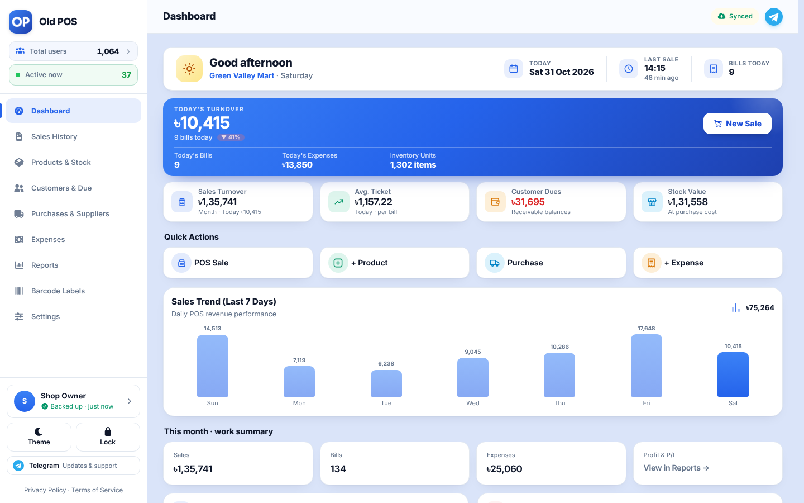
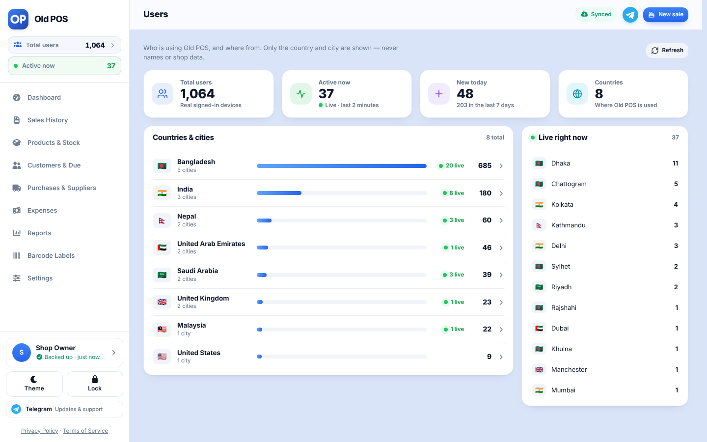
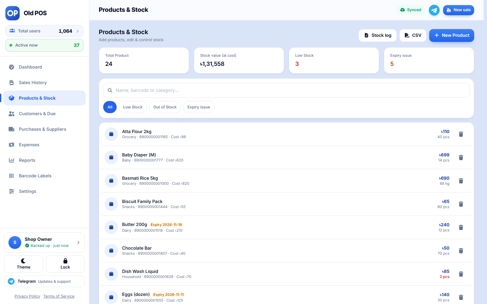
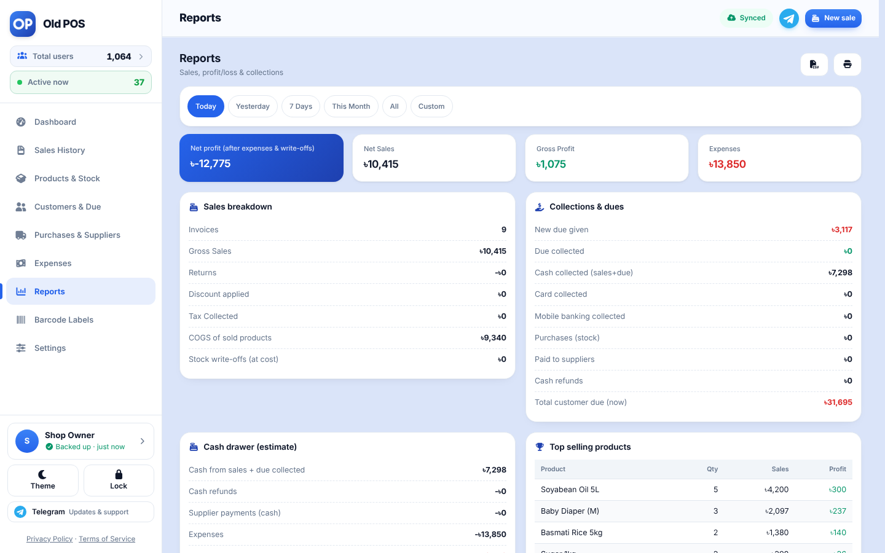

Free Offline POS Software for Small Shops
Old POS is a free point of sale (POS) app for grocery stores, pharmacies, fashion shops, restaurants, mobile shops and wholesalers. Bill faster, track stock, manage customer dues and see your profit. It works offline and backs up to your own Google Drive.
Open Old POSRead the FAQFeatures
Fast billing
Search products, scan barcodes, apply discount and tax, hold and resume bills.
Cash, Card, Mobile banking, Due
Quick-cash buttons, automatic change and partial payment.
Receipts and printing
Print on 58 or 80 mm paper, use a Bluetooth thermal printer, share on WhatsApp or SMS.
Customer due ledger
Track dues, collections, credit limits and send reminders.
Stock and expiry
Low-stock and expiry alerts, product photos, CSV import and export.
Purchases and suppliers
Stock-in with supplier dues, payments and full supplier ledger.
Returns and expenses
Returns restore stock; expenses by category and date.
Stock adjustments
Record damaged, expired or lost stock with a log. Write-offs reduce profit at cost.
Profit reports
Net sales, gross and net profit, collections and a 7-day sales chart.
Works offline
Open and sell with no internet. Installable on any device.
Google Drive backup
Automatic backup to your own Drive. Change phones without losing data.
PIN lock and privacy
Lock the app with a PIN. No ads, no tracking.
A4 invoices and statements
Print a full-page invoice for business customers and an account statement for any customer.
Quick actions
The dashboard has one-tap buttons for a new sale, new product, expense, stock-in and due collection, plus a short getting-started guide.
Dark and light theme
Clean design for phones, tablets and desktops.
Screenshots


Desktop




Who is Old POS for?
Grocery and convenience stores · Pharmacies · Clothing and fashion shops · Restaurants and cafés · Mobile and electronics shops · Wholesalers and distributors · Hardware and building materials · Bakeries and sweet shops · Cosmetics and beauty · Salons, repair and other service businesses · Any small business that needs simple billing and stock control.
How it works
1. Open Old POS and sign in with Google. 2. Add your products and start billing. 3. Install it on your home screen and keep selling, even offline.
Frequently asked questions
Is Old POS really free?
Yes. Old POS is free to use, with no monthly fee, no per-device fee and no hidden charges.
Is Old POS open source?
Yes. Old POS is an open-source project. Anyone can run their own business with their own Google account, with no third-party company involved.
Does it work without internet?
Yes. After the first load the app opens and sells offline. Your backup syncs to Google Drive when you are online again.
Where is my data stored?
On your device, plus an automatic backup in a private folder of your own Google Drive. Old POS has no server and cannot see your data.
Do I have to sign in with Google every time I open the app?
No. Old POS opens straight away on your device. It renews its Google Drive connection in the background, and if Google needs a confirmation you just tap Reconnect. Selling is never blocked.
Which devices are supported?
Any modern browser on Android, iPhone, Windows, Mac and Linux. You can install it from the browser like a native app.
Can I scan barcodes and print receipts?
Yes. Scan with the phone camera in Chrome on Android, or use a USB or Bluetooth barcode scanner on any device. Print on 58 mm or 80 mm paper or on a Bluetooth thermal printer.
Can I track customer dues and suppliers?
Yes. Each customer and supplier has a ledger with dues, payments and reminders by WhatsApp or SMS.
What if I change or lose my phone?
Sign in with the same Google account and your shop data returns from your Drive backup.
Does it support my local currency and language?
Product and customer names can be written in any language, and amounts use the ৳ currency format with lakh-crore grouping.
Is my business data safe?
Data stays on your device and in a private app folder of your Google Drive that Old POS alone can read. You can also lock the app with a PIN.